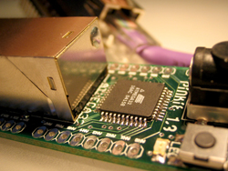

social software, tangible media, interactive architecture, sensor networks, computer supported collaboration, social and economic networks Open I/O is a suite of software services and applications for composing and running distributed physical media in a way that enables people to exchange data over the Internet. By using this system, artists and designers can collaborate and take advantage of high-level social and economic information while creating low-level physical interactions. By enabling social interactions through networked electronic objects, Open I/O lets people explore the intersection of material culture (things, physicality) and ideology
(ideas, values).
Abstract Digital networks have been widely used to handle complex collaboration tasks between people. The Internet has been emerging as the core platform for communication, collaboration, and organization, and network-enabled conversations are becoming a principal carrier of new ideas [1]. Systems for collectively creating and manipulating knowledge are not only bound to virtual world, but also getting close to our physical world with the widespread adoption of network capable devices, sensors, and actuators. With its current state the Internet is more than a web of machines, it has become “A web of clusters of people and things” [2]. Under these highly connected conditions, creating meaning is a challenge. The proposed paper describes the Pinkie Platform and how it enables meaningful applications through collaboration-oriented software services and interfaces in a highly connected world. The Pinkie Platform is a network based electronics prototyping board and a suite of software services to program and run distributed physical media and enable people to exchange data and functionality of devices over the Internet. The goal of such a system is to take advantage of high level social and economic information while designing low level physical interactions. The Pinkie Platform facilitates the creation of new meanings by weaving social and economic relationships into composition of functionalities of devices. Leveraging the collaboration between people using the collective information and the “network effects” is the main method for meaningful device compositions. The term “network effects” in economics has been defined as a change in benefit [3], it causes a good or service to have a value to a potential customer dependent on the number of customers already owning that good or using that service. Fax machines and telephone networks are a few common examples, in which increases in usage lead to direct increases in value. Based on this fact, the values that will arise by the network effects should be explicit, and should be reflected to the device compositions. One way to explicitly reveal network effects is to embed economic relationships into the system. This articulates the information flow between people and the functional exchanges between devices. For example, one hour renting price of the sensors of a Pinkie board can represent the value of how sensors are situated, quality of the output data, accuracy, relevancy, reliability and so on. Furthermore, the whole context and configuration can be a resource for another device composition. In the case of multiple devices that work together, the network effects can be seen in the increasing functionality of the composition. As the number of participants increase, new groups form and result in rich collaborations, people benefit more, and the potential for new compositions and new functions increases. The Pinkie Platform is at the intersection of three separate complex systems: computer and communication networks, sensor and actuator networks, and social and economic networks. Combining high-level systems such as buying and selling goods, subscribing to an online service, and low-level systems such as microchip programming and electrical sensing is a technical and intellectual challenge. But it is possible to compose electrical sensors, actuators, economic transactions, and social interactions by gluing high and low level programming languages, network protocols, and software frameworks. During the course of this project, we designed protocols between people to utilize collaboration, and protocols between devices to enable composition of their functionalities. By merging these technologies and ideas from different levels and fields, new forms of expressions open up for artists and designers. The Pinkie Platform enables people to collaborate on a complex system through simple interfaces. There are four stages that defines the typology of our architecture: 1) Discovery & Addressing
2) Programming & Composing
3) Runtime
4) Trading Discovery and addressing is handled by the Communication Service. This is a server-client hybrid system where a router program runs on the local machine and discovers the Pinkies on the local network, and registers them to the central Communication Service. After this stage, Pinkies become unique and globally available to other devices and people. Once they are accessible, Pinkies can be programmed through a web interface. Basically a person writes C code to an HTML form and uploads the code to a certain Pinkie that can be anywhere in the world. With this feature a person can program multiple Pinkies in different cities. When a Pinkie is programmed it starts to run. It can communicate to other Pinkies in real-time using the same router program that is used for discovery and addressing. The runtime behavior is based on how the author programmed and composed the Pinkies. For example, an array of sensors in Cambridge can drive motors and LEDs in San Jose in real-time. Such an interaction takes shape based on the collaboration between people in these different cities. When we think of many people and devices communicate in this system, the collaboration between people needs to be organized in meaningful ways. To leverage the collaboration between people using the collective information and the network effects, we use a market model where people can trade the functionalities of the devices and situations. The way people compose and situate their Pinkies defines the value of their service. It is a market in which people can connect various types of sensors and actuators to Pinkies and place them throughout the city. The sensors can give users instant access to the state of certain resources or the flow of other resources in the city. On the other hand, actuators can be used to engage people into networked interactions or to materialize digital works created by sensors from other Pinkies or by purely digital means. The Pinkie Platform extends the existing OPENSTUDIO infrastructure that is designed in the Physical Language Workshop at the MIT Media Laboratory. OPENSTUDIO is a unique online intersection of creativity and capitalism in an experimental online art exchange economy. The core data structure - user accounts, transactions, logs - of the OPENSTUDIO is used for trading the data of the devices based on a virtual currency system. For example, a person can subscribe to a live data feed, rent the sensors for some time period, or buy the analyzed and visualized version. The live data can be used in other hardware compositions, in separate software applications, or in combinations of both. The price of the data can be defined based on many parameters such as the type of access to the data, the meaning of the composition and situation, personal decisions, or the trends in this micro market economy. This system opens up a new type of collaboration between students, artists, designers, instructors, and institutions in different parts of the world. People can organize new types of courses and workshops where they can quickly prototype their ideas and concepts in the physical world and compose live interactions between remote physical environments. We provide a profound medium by leveraging the synchronous and asynchronous information flow in the networks of people and devices that has a potential for a new type of distributed creativity. Such a connected medium enables a new type of scenography and spatial continuity that fundamentally affects the way we understand and use space and the way production of space is affecting the city. |